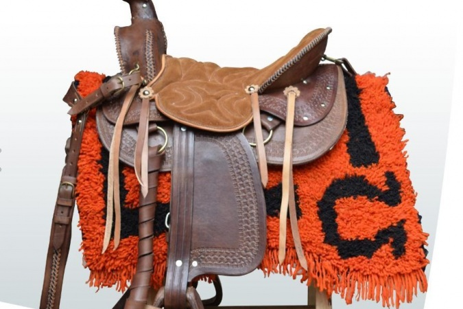
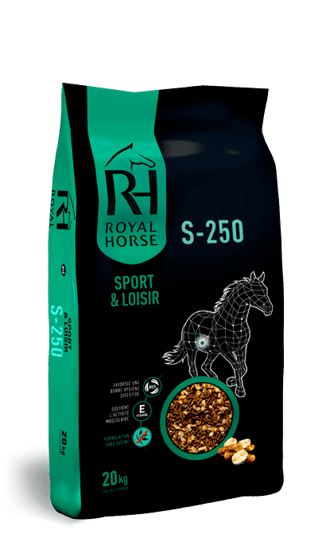

De los caballos y los humanos tienen una relación muy antigua. Se cree que los nómadas asiáticos fueron los que probablemente domesticaron a los primeros caballos hace unos 4.000 años, momento desde el cual estos animales siguieron siendo esenciales para muchas sociedades hasta el advenimiento del motor. De hecho los caballos todavía tienen reservado un lugar de honor en muchas culturas, y a menudo se encuentran vinculados a multitud de hazañas bélicas. Los caballos son animales mamíferos perisodáctilos –en cuyas extremidades poseen dedos terminados en pezuñas– que pertenecen a la familia de los équidos. Son herbívoros y el periodo de gestación de las hembras es de unos 11 meses, después del cual nace tan solo una cría. Existe únicamente una especie de caballo doméstico, sin embargo podremos encontrar alrededor de 400 razas diferentes que se especializan en todo tipo de tareas, desde fuertes y resistentes animales usados para tirar de los aperos del campo hasta los más veloces empleados en las carreras. Los caballos salvajes por lo general se reúnen en grupos de 3 a 20 animales. Un semental lidera el grupo, conformado por varias yeguas y ejemplares jóvenes. Cuando los machos jóvenes se convierten en potros, alrededor de los dos años de edad, el semental los expulsa. Desde entonces estos vagan con otros machos jóvenes hasta que pueden hacerse con su propio harén. Los caballos viven alrededor de 25 años y el color de su pelaje o capa puede ser muy variable. Se desplazan de tres formas diferentes: al paso, al trote y al galope. Los caballos duermen de forma fraccionada y son capaces de hacerlo de pie, aunque para descansar profundamente siempre lo harán sentados en el suelo.
Caballo fiel |
Brio Adulto |
Vacuna para caballos |
|  |
Suplementos para caballos |
Monturas para caballos |
Sal para caballos |
|  | |
BENEFICIOS:
|
BENEFICIOS
|
BENEFICIOS
|
BENEFICIOS
|